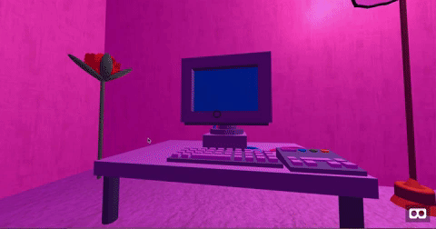

Broken Heart Museum
Fall 2018, Shanghai
Individual Work

Broken Heart Museum is a mixed reality museum that brings the visitor to a room of broken heart. The museum is the final work of a 7-weeks class “Exhibition: Next”. The class explores how emerging technologies can be applied to the museum and
exhibition design to enhance museum visiting experience. Broken Heart Museum is a museum that digs into possibilities of mixing the physical world and the virtual world, and blending both of the worlds together. The museum is heavily inspired
by “Milk and Honey”, a collection of poetry that is written by Rupi Kaur, about the experience of violence, abuse, love, and loss.
The Museum experience takes the audience to go through three layers. It compares three different types of immersive experience that people can explore nowadays (Traditional vs. Desktop Computer vs. Virtual Reality). While people start
exploring the museum, I observe how fast the visitors can adjust into the immersions in each condition.
The first layer is the physical experience. Once the visitor enters the physical space in the gallery, the visitor can start experiencing it. I recreate a working space of a
teenager who has a broken
heart,
thus the visitor can feel the vibe of it immediately. Salt and Tear, a series of digital illustration that I remixed from the illustration in “Milk and Honey” is hung on the wall as a part of my exhibition.

The second layer is the digital experience of the museum. On the PC screen, the visitor will see the virtual bedroom and interact with the furniture or other objects in the room by clicking it or getting close to it. The online museum is based on aframep5, a wrapper that makes user write Web VR on p5.js. The wrapper is initially created by Craig Kapp. I collaborated with Professor Kapp on the new version of the wrapper. It is used in Interactive Computing class under Department of Computer Science.


The museum also provides a VR immersive experience. It supports Google Cardboard or other mobile VR headset. The visitor can enter the museum through the browser (preferably chrome) on the phone, and put the phone in the VR headset to experience it. The visitor can click the “tile” on the floor to move around.

Some sketches when I developed my idea and production
Broken Heart Museum is an open-end project. It evokes questions about the use of mixed reality in an exhibition. Does mixed reality improve the museum experience or not? Is the Virtual Reality necessary for the visiting experience?
< < back to check other projects
back to top